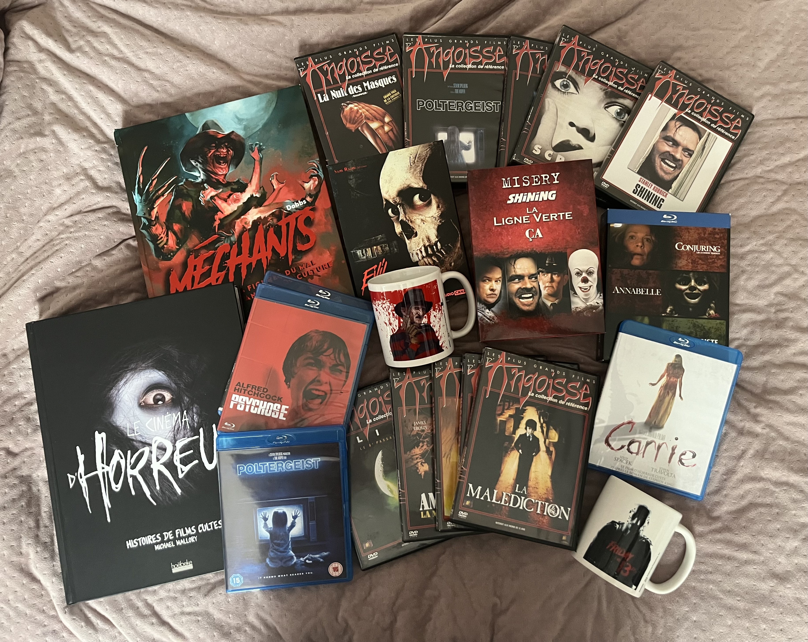
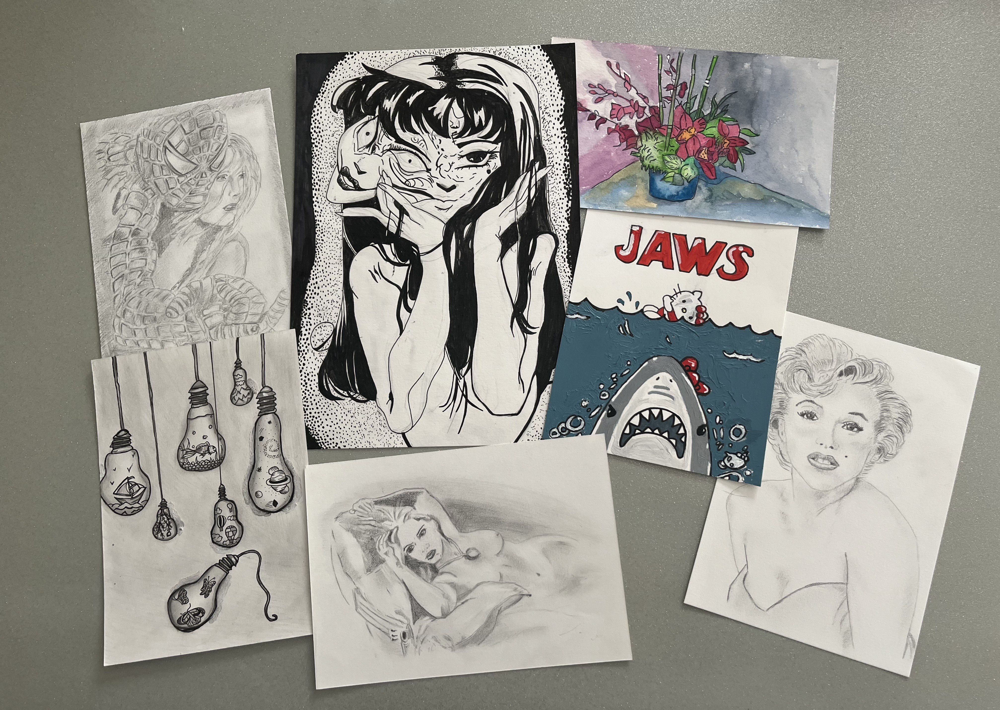

Actuellement en première année de BUT Science des données, j’ai toujours eu une affinité pour les matières littéraires. Écrire et laisser libre cours à mon imagination ont toujours été mes points forts. Cependant, en grandissant, j’ai compris que les matières scientifiques m’accompagneraient tout au long de ma scolarité. J’ai donc dû m’adapter et apprivoiser ces disciplines qui ne me facilitaient pas la tâche. Ma détermination et ma capacité à ne jamais baisser les bras ont été mes plus grandes forces pour surmonter les obstacles sur mon parcours scolaire.
Au-delà de mon envie de me démarquer, un rêve est né en moi. Après avoir lu plusieurs livres retraçant les expériences d’un célèbre médecin légiste français, je me suis découvert une passion pour la médecine, et plus particulièrement pour ce métier. Moi qui avais toujours été une élève dans la moyenne, je rêvais désormais de faire des études de médecine. Pour y parvenir, j’ai choisi des spécialités à l’encontre des mes facilités (Science de la vie et de la Terre et Physique-chimie), pris deux options supplémentaires et réalisé des stages pendant mes vacances afin de préparer la formation LAS. Mon objectif était de me démarquer et d’avoir un dossier solide pour intégrer l’école tant convoitée.
Malheureusement, cette expérience m’a appris qu’il ne suffit pas toujours d’avoir de l’ambition pour surpasser toutes les difficultés. J’ai été placée sur liste d’attente et mon rêve s’est effondré. Cependant, j’avais un deuxième choix sur ma liste de vœux : le BUT Science des données à l’Université de Poitiers. Cette formation avait l’avantage d’être située dans ma ville natale, de correspondre à la plupart de mes compétences et d’avoir déjà été brillamment réussie par mon frère à l’époque où elle était encore un DUT. Mes parents m’ont encouragée à suivre cette voie, me rassurant sur ma principale crainte : l’aspect informatique.
Mes passions ont également été grandement influencées par ma famille. Mon père et mon frère, tous deux grands cinéphiles, m’ont transmis leur amour du cinéma dès mon plus jeune âge. Rapidement, j’ai développé une préférence pour les films d’horreur et d’épouvante. Mes parents, tout en encadrant cette passion, m’ont soutenue en m’offrant de nombreux DVD et livres sur le sujet. Mon frère, quant à lui, m’a même aidée à créer mon propre blog, où je rédigeais des critiques de mes visionnages. Cette passion a affiné mon sens critique et mon esprit d’analyse.
Mon père m’a également transmis son amour de la cuisine, et plus particulièrement de la pâtisserie. Toujours en quête de progression, j’aime tester de nouvelles recettes dès que j’en ai le temps, et je prends plaisir à les partager avec mes amis et ma famille. J’accueille volontiers leurs critiques, cherchant sans cesse des axes d’amélioration. Cette passion m’a appris la rigueur et le perfectionnisme.
Pour finir, ma troisième passion, encore en lien avec l’artistique, est le dessin. C’est la plus récente et aussi celle qui me demande le plus d’assiduité. Une fois de plus, n’étant pas née avec un don particulier dans ce domaine, c’est le travail et l’expérience qui m’ont permis de progresser. Cette passion m’a enseigné l’importance d’un travail régulier et appliqué.
